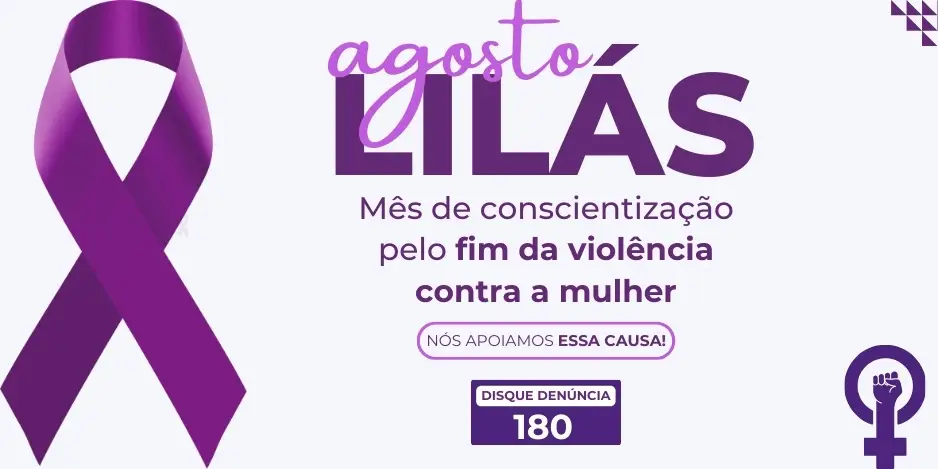

Foco na Conscientização e Informação
O Agosto Lilás é uma campanha nacional de conscientização e combate à violência contra a mulher. A cor e o mês foram escolhidos para marcar o aniversário da Lei Maria da Penha (Lei Federal nº 11.340), sancionada em 7 de agosto de 2006, um marco legal na proteção dos direitos das mulheres no Brasil. O objetivo principal da campanha é duplo: primeiro, informar a sociedade sobre os cinco tipos de violência doméstica e familiar previstos na lei (física, psicológica, sexual, patrimonial e moral); e segundo, divulgar os mecanismos de denúncia, a rede de apoio e os direitos das vítimas. A mensagem central do Agosto Lilás é clara: Violência contra a mulher é crime, e a informação e a união da sociedade são as principais ferramentas para proteger e dar voz às vítimas. Em situações de emergência ou para realizar denúncias de forma anônima, o número 180 (Central de Atendimento à Mulher) deve ser acionado. 